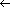

Dr. Dobb's Journal October, 2005
On Christmas Eve 1997, MicroWorks (my company) entered into a joint venture agreement to write a point-of-sale software package. We would do the programming, and our joint venture partner would do the sales and marketing. As often happens, we underestimated the time and effort required to complete the task, but a year and a half later, a product emerged ready for shipment. We put a lot of blood, sweat, and tears into our software and were eager to find a niche in the marketplace. Most of the sales were to small specialty stores that wanted to track inventory.
Sales were primarily through dealer networks. One dealer convinced us that if we made a few modifications to the system, he could place a copy in every business on one of the islands in the Caribbean. We gleefully tailored the code to meet his requirements. After some time passed, however, we noticed that this particular dealer only licensed a single copy. To this day, we think this one copy was cloned and made its way into many businesses where intellectual property rights are not respected.
Time passed and we looked for new niches and created more software. Still, the memory of what happened on this island and realization that software could be "borrowed" and not purchased, lingered in our minds. Thus, being engineers, we decided to create a device that would prohibit the easy "copying" of software. We knew that dongles were commercially available, but their prices seemed prohibitively high for what we desired. Previously we had done some engineering work for another company that produced USB devices that had good manufacturing connections. Through this connection and our experience in the field of USB drivers and devices, we created a robust USB security key at a modest price point.
For some people, cracking security has a monetary incentive. For others, it is an intellectual challenge. With today's debuggers and decompilers, it is a simple task to step through a running program and watch as each instruction is executed. It is easy enough to change a conditional branch to a no-op or to an unconditional branch. We decided to create a system that could not be cracked by such means. To that end, we designed a security key so that decision-making is done on the dongle and not by the application program. By putting the process in the dongle, we can control what would-be crackers can see. Another design choice was to create a dongle with a generous amount of memory. This lets application programs store information required for the successful execution of the program. This approach lets the dongle be used in many different ways. We are not limited to simple yes/no operations. Programs can be written so that they read/write data on the dongle. With this exchange of data, it is harder for crackers to compromise the system.
For the reasons just mentioned, we selected as the "brains" of the security key a part from Cypress Semiconductor that consisted of a processor, RAM, and ROM on the same chip. The part is designed so that the code burned onto the ROM is "execute" only. Even with hardware tools, nobody can read the program. The dongle also has 32 KB of flash memory for placing critical program information on the dongle. To make sure the information on the dongle is secure, we use AES 128 encryption. Included in the "execute-only" portion of the dongle are the keys required to decrypt the data.
In a lab environment, someone might cut a dongle open and read the flash memory, but without knowing the keys, the data would be scrambled beyond recognition. One reason for choosing a 128-bit encryption scheme is because it is the strongest key that the U.S. Government allows for export. There are a few countries where we cannot do business, but we can live with that. As for the name, "SmartDongle USB Security Key," one important consideration in coming up with a name was its availability in the realm of the Internet. We had no trouble acquiring the "smartdongle.com" domain name.
The process by which communication is established between the SmartDongle and the computer works like this: The SmartDongle has a free running counter. From the time power is supplied to the chip, the firmware on the dongle starts adding one to a counter. The chip runs at 4 MHz, so the counter changes rapidly. When the application program attempts to make contact with the SmartDongle, the number is quite large. Not only is it large, but it is unpredictable. When the application program signals that it wants to communicate with the dongle, the dongle takes that large, unpredictable number, which I call "L1," and finds the next value in its linear congruential sequence, which I call "L2." The value of L2 now is randomly and uniformly spread over the range from 0 to 264-1. The dongle sends L2 back to the PC and waits. The PC has the ability to generate the same linear congruential sequence. It finds the next value, which I call "L3", and sends it back to the dongle. The dongle compares the value it receives from the PC with the value it calculated. If they are identical, the communication is established. If they differ, the dongle requires that the process starts again.
The linear congruential sequence is a popular and useful method for generating pseudorandom numbers. Pseudorandom numbers are values generated by an algorithm that appear to be random, but can be recreated at will. The process was introduced by D.H. Lehmer (see "Mathematical Methods in Large-scale Computing Units," Proceedings of the Second Symposium on Large-Scale Digital Calculating Machinery, 1951) and enhanced by W.E. Thomson (see "A Modeled Congruence Method of Generating pseudorandom Numbers," Computer Journal, 1958). It is clearly taught in Donald Knuth's The Art of Computer Programming, Volume 2: Seminumerical Algorithms, Second Edition (Addison-Wesley, 1981).
The algorithm works like this:
Ln+1  (a * Ln + c) modulo m
where "a" is the multiplier, c is the increment, and m is the modulus. The initial value (L0) is called the seed. Choosing the "right" values for a, c, and m are crucial. If the wrong values are chosen, then the sequence repeats quickly. To make life easy for everyone, it makes sense to use a modulus that works with the arithmetic instructions of the processor at hand. For the SmartDongle, we chose a modulus of 264. The little processor in our Cypress chip does its arithmetic 8 bits at a time. We use simple loops in the firmware to do the arithmetic on the unsigned 64-bit numbers.
The values chosen for a and c can yield widely different results. We would like to have as many different numbers appear as possible. With a modulus of 264, there are 264 possible numbers that can occur in the sequence. Attempting to keep track of which numbers have occurred in the sequence sounds like a daunting task. If we were to attempt to create a bit array and keep track of which numbers appear in the sequence, it would take more RAM than exists in all computers that have ever been built on Earth (about 2-million terabytes). Fortunately, we have other options. The following algorithm stops the first time a number is repeated in a sequence. The function f can be any function:
count 0
X Y seed
do
{
count count + 1
X f(X)
Y f(f (Y))
} until X = Y
This algorithm certainly satisfies my idea of a robust algorithm. It is simple and yet effective. It uses only a trivial amount of memory, performs a modest number of calculations, and yet it works.
Not all of the potential values for a and c yield sequences that are even close to being random. As a trivial example, if a is chosen to be zero, then the sequence quickly deteriorates. Regardless of the seed supplied, after the first value, all subsequent values have the value of c. This is not a very useful sequence. Similarly, if a is chosen to have a value of 1, the linear sequence is way too predictable. "Good" choices for a and c are prime numbers that are relatively prime to the modulus. Integers are stored on a PC as binary numbers. The modulus for binary numbers is a power of 2. To be relative prime to the modulus, the values of a and c must be odd. Some quick experimenting with values of a and c using the foregoing algorithm shows that whenever the numbers are prime, the period of the linear sequence is maximized. Stated another way, as long as a and c are relatively prime to the modulus, the values in the sequence L1, L2, L3, L4... do not repeat until all possible values have appeared exactly once.
These sequences work well in our SmartDongle application. In other applications, the sequences may fail miserably. For instance, using the sequences to simulate a coin toss could be done by testing to see if the numbers are even or odd. The problem is that since a and c are both odd, the values in the linear congruential sequence alternate between even and odd numbers. In this example, selecting a bit other than the low-order bit works much better.
There are lots of prime numbers that can be represented in 64 bits. We need to have a method for selecting from this rich set. This can be done without requiring a large amount of computation. For starters, we know that all of the values we want to use for a and c must be odd. I use t as the value to be tested to see if it is prime and d as the divisor. The variable q will be the quotient.
d 3
do
{
q t / d
if ((q * d) = t) then t is not prime
d d + 2
} until q < d
If the program drops out of the loop, it means that t is a prime number. We can get away with stopping when q is greater than d because multiplication is commutative. Remembering back to the days of algebra, we learned that q times d is the same as d times q. That means that the comparison to see if q*d is equal to t need only use the possible values for which q is less than or equal to the square root of t. Rather than use a separate calculation to find the square root of t, we can accomplish the same objective by just comparing the divisor and the quotient.
The final step in finding values for a and c is pretty simple. We select an arbitrary odd number and test to see if it is prime. If it isn't, we add 2 and try again. It doesn't take many iterations before a prime is found:
t an odd number we pull out of the air
d 1
do
{
d d + 2
q t / d
if ((q * d) = t) then
{ t is not prime
t t + 2
d 1
}
} until q < d
When we exit the loop, t will be a prime number. We use this method to find a and c, we use 264 as our modulus, and we use the value in our free running counter as the seed value for the sequence. The result is a query that the SmartDongle puts to the PC that is difficult to answer without knowing the values of a and c.
We believe the procedures outlined here provide a reasonable level of security. Part of that comes from reversing the roles in the interrogation process. Part of it comes from the randomness introduced by the amount of time that elapses between the moment that power is delivered to the SmartDongle and the instant that the application program attempts to start the communication process. Part of it comes from the pseudorandom nature of linear congruential sequences. Together, these processes make it more difficult to compromise the system. Had we used a SmartDongle in our point-of-sale software, I'm pretty sure that retailers on an island in the Caribbean wouldn't have thought it was worth their time and effort to attempt to crack the code.
DDJ